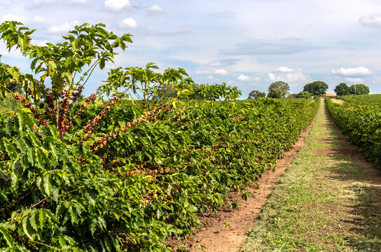

Coffee: The Aromatic Crop

Uses of Coffee
Coffee is widely valued for its rich aroma and flavor, with various uses:
- Beverages: Coffee beans are used to make popular beverages, such as espresso, cappuccino, and iced coffee.
- Skincare Products: Coffee is used in exfoliating scrubs and face masks due to its antioxidant properties.
- Composting: Coffee grounds are commonly used as organic matter to enrich compost.
Types of Coffee
Various types of coffee beans are cultivated around the world, each with unique characteristics:
- Arabica: Known for its smooth flavor and low acidity, popular in specialty coffee.
- Robusta: Stronger and more bitter, commonly used in espresso blends.
- Liberica: Known for its unique aroma and woody flavor, grown primarily in Southeast Asia.
Growth Requirements for Coffee
Coffee plants require specific conditions to thrive:
- Climate: Requires tropical climates with ample rainfall and consistent temperatures.
- Soil: Prefers rich, well-draining soil with a slightly acidic pH.
- Shade: Often grown under shade trees to protect from direct sunlight.
Natural Fertilizers for Coffee
Natural fertilizers can enhance coffee plant health:
- Compost: Adds organic matter to the soil, enhancing water retention and fertility.
- Bone Meal: Supplies phosphorus, which aids in root development and flowering.
- Mulch: Helps maintain soil moisture and reduces weed growth around the plants.
Pest and Disease Prevention
Measures to protect coffee crops from pests and diseases:
- Pruning: Keeps plants healthy and reduces pest habitats.
- Use of Resistant Varieties: Planting disease-resistant coffee varieties minimizes crop loss.
- Integrated Pest Management (IPM): Combines biological and cultural practices to control pests.
Benefits of Coffee
- Rich in Antioxidants: Coffee contains antioxidants that can help reduce inflammation.
- Mental Alertness: Caffeine in coffee stimulates the central nervous system, promoting alertness.
- Social and Cultural Value: Coffee brings people together and is integral to many cultures.
Frequently Asked Questions
1. How long does it take for a coffee plant to produce beans?
Coffee plants usually take around 3-4 years to produce their first crop, and they can continue producing for up to 20 years.
2. What are common pests that affect coffee crops?
Common pests include coffee borer beetles and leaf rust. These can be managed with integrated pest management practices.
Back to Crop List